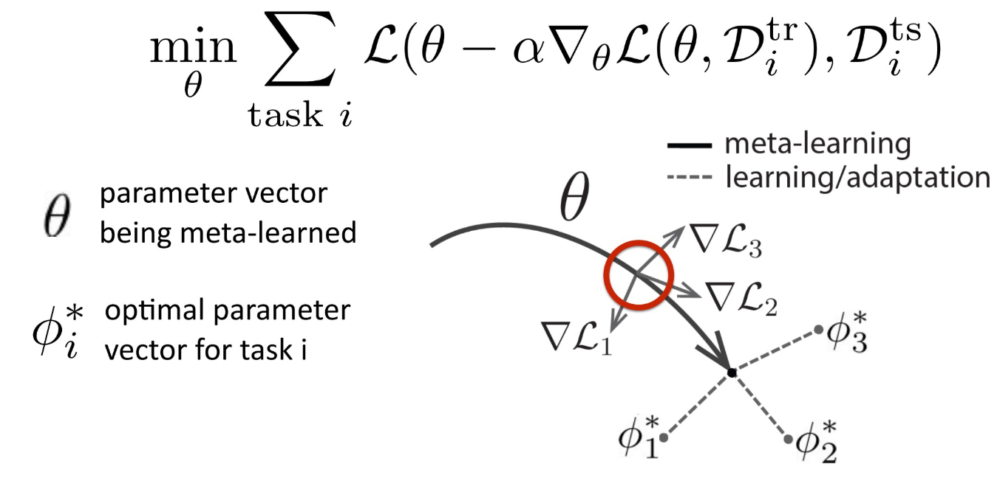

乘着假期期间，把meta-learning部分的内容全部过一遍。把最近的工作做一些简单的总结，顺便做了一份tutorial方便更多的同学对这个领域quickview。以及提供一部分代码进行实践，深入了解目前元学习领域解决的各种问题。以及非常流行的MAML和Reptile两种模型无关的元学习方法。并尝试从理论上对元学习模型进行解释，learn to learn对于few-shot，zero-shot，one-shot learning都有很好的应用，同时需要掌握的概念有迁移学习和表示学习的概念，了解神经网络学习的主要特征有哪些。本tutorial的参考资料都列到了最后的附录中。
Meta-learning的两类观点
- 一种是Mechanistic view: 可以读取整个数据集并预测新数据点的深度神经网络模型。训练该网络使用一个元数据集，该元数据集本身包含许多数据集，每个数据集用于不同的任务。此观点使实现meta-learning算法更加容易。
- 另一种是Probabilistic view：从一组（元训练meta-training）任务中提取先验信息，从而高效地学习新任务学习新任务时, 使用此先验和（小）训练集来推断最有可能的后验参数。此观点使理解元学习算法更加容易。
元学习的数学定义
通过学习一类任务，得到一个通用的参数$\theta ^*$,通过固定参数$\theta$ ，在每个训练集的任务上用该task运用该task可以得到$\phi$的训练参数。
监督学习：
目标是:$\arg \max _{\phi} \log p(\phi | D)$ ，其中$\mathcal{D}=\left\{\left(x_{1}, y_{1}\right), \ldots,\left(x_{k}, y_{k}\right)\right\}$
其中，xi表示input，比如image，而y表示label。
$=\arg \max \log p(D | \phi)+\log p(\phi)$
$=\arg \max \sum_{i} \log p\left(y_{i} | x_{i}, \phi\right)+\log p(\phi)$
上式可以理解为寻找最大的$\phi$ , 使得学习出来的输出和真实的输出在相似度(极大似然)上最大。其中$\log p(\phi)$ 可以理解为在训练过程中加的正则项，为了防止训练的时候出现过拟合。
对于监督学习来说，存在的问题是
如果想训练出一个非常强大的模型需要大量的数据，
对于一些任务来说label data 非常有限
元学习
实际上，我们可以将数据集分成多个dataset，其中每一个dataset含有不同张图片，我们把这个新的dataset称作是meta-train数据集。


这样就是在每一个Di上都可以学习到需要的参数，最后综合在不同的dataset上学习到的参数作为$\phi$使得其最大。数学上的定义就是：
$\arg \max _{\phi} \log p\left(\phi | \mathcal{D}, \mathcal{D}_{\text {meta-train }}\right)$
meta-learning的问题就建立在这样的数据集的基础上，其中$\mathcal{D}=\left\{\left(x_{1}, y_{1}\right), \ldots,\left(x_{k}, y_{k}\right)\right\}$ $\mathcal{D}_{\text {meta-train }}=\left\{\mathcal{D}_{1}, \ldots, \mathcal{D}_{n}\right\}$ ，$\mathcal{D}_{i}=\left\{\left(x_{1}^{i}, y_{1}^{i}\right), \ldots,\left(x_{k}^{i}, y_{k}^{i}\right)\right\}$ .
因此, 假定$\phi \perp \mathcal{D}_{\text {meta-train }} | \theta$, 表示$ \phi$ 与 $\mathcal{D}_{meta-train}$ 和 $\theta $ 是独立无关的, 可以推导出下面的式子
$\log p\left(\phi | \mathcal{D}, \mathcal{D}_{\mathrm{meta}-\mathrm{train}}\right)=\log \int_{\Theta} p(\phi | \mathcal{D}, \theta) p\left(\theta | \mathcal{D}_{\mathrm{meta}-\mathrm{train}}\right) d \theta$
$\approx \log p\left(\phi | \mathcal{D}, \theta^{\star}\right)+\log p\left(\theta^{\star} | \mathcal{D}_{\text {meta-train }}\right)$
第二行是找到一个平均值$\theta^{\star}$对积分做一个平均得到。其中，第二项中不包含变量$\phi$，为常数项，因此最后问题就变成了：
$\arg \max _{\phi} \log p\left(\phi | \mathcal{D}, \mathcal{D}_{\text {meta-train }}\right) \approx \arg \max _{\phi} \log p\left(\phi | \mathcal{D}, \theta^{\star}\right)$
数学定义完全可以看明白。上式称为是元学习(meta-learning)需要解决的问题。要先找到一个$\theta^{*}$ ，再找到最好的$\phi$ 使得能够得到最大的p。
元学习解决思路及术语介绍：
要想使得上式能够得到求解，我们看一下如何进行完整的optimization 过程。优化问题可以分为两部分：
1.第一部分：meta-learning，即$\theta^{\star}=\arg \max _{\theta} \log p\left(\theta | \mathcal{D}_{\text {meta-train }}\right)$
2.第二部分：adaptation. 即 $\phi^{\star}=\arg \max _{\phi} \log p\left(\phi | \mathcal{D}^{\operatorname{tr}}, \theta^{\star}\right)$
我们将meta-train数据集进行完整的划分：
$\begin{array}{l}{\mathcal{D}_{\text {meta-train }}=\left\{\left(\mathcal{D}_{1}^{\text {tr }}, \mathcal{D}_{1}^{\text {ts }}\right), \ldots,\left(\mathcal{D}_{n}^{\text {tr }}, \mathcal{D}_{n}^{\text {ts }}\right)\right\}} \\ {D_{i}^{\text {tr }}=\left\{\left(x_{1}^{i}, y_{1}^{i}\right), \ldots,\left(x_{k}^{i}, y_{k}^{i}\right)\right\}} \\ {\mathcal{D}_{i}^{\text {ts }}=\left\{\left(x_{1}^{i}, y_{1}^{i}\right), \ldots,\left(x_{l}^{i}, y_{l}^{i}\right)\right\}}\end{array}$
因此，可以将$\phi^{\star}=\arg \max _{\phi} \log p\left(\phi | \mathcal{D}^{\operatorname{tr}}, \theta^{\star}\right)$ 进行训练，得到的参数$\phi$ 即可以表示$\phi^{\star}=f_{\theta^{\star}}\left(\mathcal{D}^{\mathrm{tr}}\right)$ 下的$\theta$ ，通过进行更新参数$\theta$ ，验证在$D^{tr}$得到结果。
以上可以认为是一个完整的训练过程，其训练$\theta$ 优化数学表达为：
$\theta^{\star}=\max _{\theta} \sum_{i=1}^{n} \log p\left(\phi_{i} | \mathcal{D}_{\mathcal{i}}^{(\mathrm{ts})}\right)$
where $\phi_{i}= f_{\theta}(D_{i}^{tr})$
要在训练集上最优，使得$\phi=f_{\theta}\left(\mathcal{D}^{\mathrm{tr}}\right)$ 学习到的$\theta$。
总结来说， 直观上$\phi$ 是在训练任务$D^{tr}$ 中学习得到的通用的经验，我们称它为$f_{\theta}(D_{i}^{tr})$ , 下标表示含有$\theta$ 这个参数，最终目的是要使得在$D_{i}^{ts}$ 上学习到最好的结果——p最大。这样就完成了在少样本测试的情况下给出了最好的分类性能。实现了meta-learning的目的。
对于数据集中的训练集和测试集，需要重新定义如下图：
note：meta-learning的范式也有一些与其非常相关的问题，比如多任务学习(multi-task learning)，或者超参数优化和automl问题。
元学习常用的几类方法：
有四类方法，并不打算过多地展开讲，可以参见我另外一篇博客中使用模型无关的思想做了图像生成的工作，可以说对maml的理解比较深入了。也确实明白这是一个非常不错的工作。这里参考了ICML2019 tutorial的分类，也可以参考 https://lilianweng.github.io/lil-log/2018/11/30/meta-learning.html 的分类，主流方法还是MAML的各种改进。
1.Black-box adaptation
2.Opamizaaon-based inference
其中，最经典的莫过于MAML。
其思路可以直接用下图表示，即让这个loss最小。深入的理解，需要从论文出发。


3.Non-parametric methods
4.Bayesian meta-learning
元学习的应用：
参考ICML2019tutorial，在语言和图像上都有应用，包括现在比较火的reinforcement learning以及robtic learning。
：
上述应用还是在比较传统的领域，实际上，更多的工作开始围绕着强化学习展开，由于强化学习方面的了解的不够深入，今后会继续了解imitation learning相关的工作成果。
很喜欢这个图：元学习的终极目标，作为本篇文章的结尾！
参考资料
- ICML2019tutorial上的，Chelsea Finn和Sergey Levine做的lecuture。 https://sites.google.com/view/icml19metalearning (google site) https://youtube.videoken.com/embed/DijI4XrhqNo
- hungyi-Lee，台大，http://speech.ee.ntu.edu.tw/~tlkagk/courses/ML_2019/Lecture/Meta1%20(v6).pptx ppt, https://www.youtube.com/watch?v=EkAqYbpCYAc&list=PLJV_el3uVTsOK_ZK5L0Iv_EQoL1JefRL4&index=33&t=0s (video)
- meta-learning比较好的overview: https://lilianweng.github.io/lil-log/2018/11/30/meta-learning.html
- meta-transfer-learning: https://yyliu.net/files/meta-transfer-learning-slides.pdf (slides) https://github.com/yaoyao-liu/meta-transfer-learning (code)
- few-shot image generation with reptile: https://github.com/LuEE-C/FIGR (code) https://arxiv.org/abs/1901.02199 (paper)
- meta-transfer-learning-gan: https://yyliu.net/files/meta-transfer-learning-slides.pdf (pdf) https://arxiv.org/pdf/1812.02391 (paper)